Pendahuluan
Laravel merupakan salah satu framework PHP yang menggunakan arsitektur MVC (Model-View-Controller) untuk mempermudah pengembangan aplikasi web yang terstruktur, rapi, dan memiliki tingkat keamanan yang baik. Dalam proses pengembangan sistem informasi modern, fitur autentikasi user (Login & Register) serta antarmuka (user interface) yang responsif dan user-friendly merupakan komponen yang sangat krusial.
Laravel menyediakan scaffolding autentikasi bawaan menggunakan package laravel/ui yang terintegrasi langsung dengan framework CSS Bootstrap. Fitur ini sangat mempermudah developer dalam membangun sistem manajemen user awal secara efisien serta mempermudah pengelolaan komponen antarmuka aplikasi.
Tujuan Praktikum
- Mahasiswa mampu melakukan instalasi dan inisialisasi project baru menggunakan framework Laravel.
- Mahasiswa mampu mengonfigurasi koneksi database pada Laravel melalui file lingkungan (.env).
- Mahasiswa mampu mengimplementasikan fitur autentikasi bawaan (User Authentication) menggunakan Bootstrap.
- Mahasiswa mampu memodifikasi (custom) struktur tabel database melalui sistem migration dan melakukan pengisian data awal menggunakan seeder.
- Mahasiswa mampu mengintegrasikan template eksternal (SB Admin 2) ke dalam sistem layouting Laravel (Blade Templating).
- Mahasiswa mampu membangun fungsi CRUD (Create, Read, Update, Delete) secara penuh untuk manajemen data user menggunakan Resource Controller.
Langkah Kerja dan Pembahasan
Tahap 1: Pembuatan Project Laravel
Langkah pertama dalam praktikum ini adalah membuat workspace baru di dalam direktori htdocs dengan nama project laravel-sisfo. Proses instalasi dilakukan menggunakan package manager Composer melalui terminal/command prompt dengan menjalankan perintah berikut:
composer create-project laravel/laravel=^9.0 laravel-sisfo --prefer-dist
Setelah proses instalasi selesai, masuk ke dalam direktori project lalu jalankan perintah php artisan serve untuk menjalankan server lokal Laravel. Buka browser dan akses URL http://127.0.0.1:8000 untuk memastikan project default berhasil berjalan.
Tahap 2: Konfigurasi Database
Koneksi database diatur dengan membuka file konfigurasi .env yang terletak pada root folder project. Ubah parameter database untuk menyesuaikan dengan database yang akan digunakan, dalam hal ini menggunakan database bernama laravel_sisfo:
DB_CONNECTION=sqlite DB_HOST=127.0.0.1 DB_PORT=3306 DB_DATABASE=laravel_sisfo DB_USERNAME=root DB_PASSWORD=
Tahap 3: Implementasi User Authentication (Laravel/UI)
Fitur autentikasi user pada studi kasus sistem informasi sekolah ini memanfaatkan package scaffolding bawaan laravel/ui dengan langkah-langkah sebagai berikut:
1. Menginstall package laravel/ui melalui terminal dengan perintah:
composer require laravel/ui
2. Melakukan generate scaffolding fitur autentikasi yang terintegrasi dengan CSS Bootstrap menggunakan perintah:
php artisan ui bootstrap --auth
3. Menginstall package frontend tambahan dan melakukan compile asset bawaan menggunakan Node Package Manager (NPM) agar halaman login/register ter-generate otomatis:
npm install && npm run dev
Proses ini secara otomatis meng-generate controller otentikasi (Auth Controllers) serta file-file view Blade seperti login, register, dan folder passwords.
4. Menjalankan migrasi database awal untuk membuat struktur tabel default autentikasi bawaan Laravel:
php artisan migrate
Melakukan pengujian akses halaman login, register, dan home default pada browser melalui URL project.
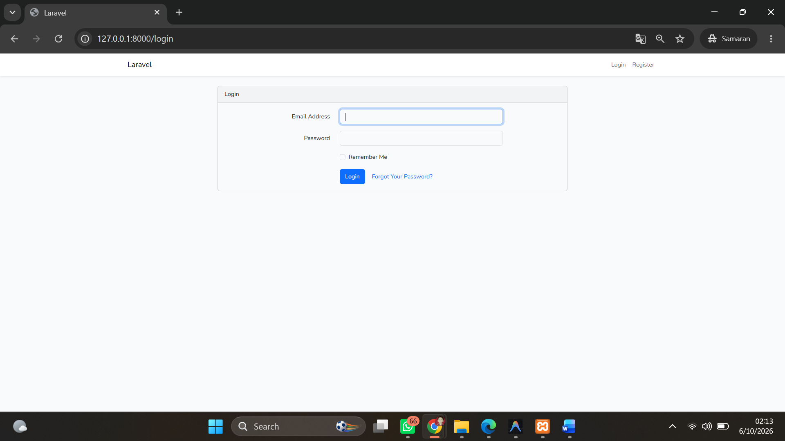
(Halaman Login Bawaan)
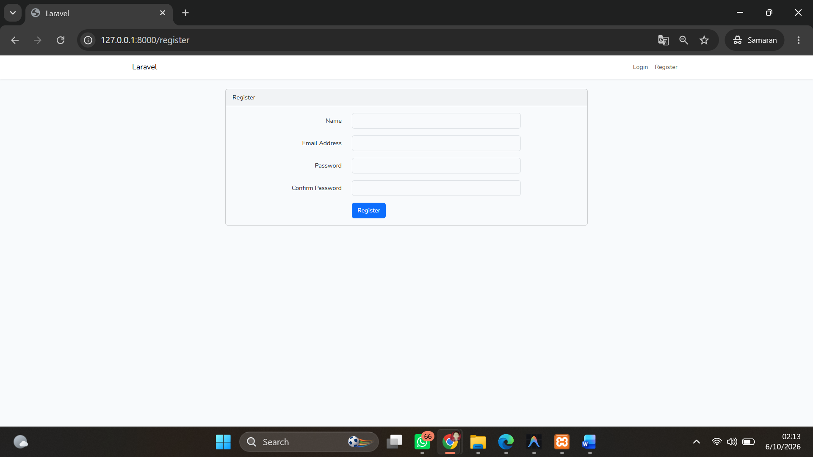
(Halaman Register Bawaan)
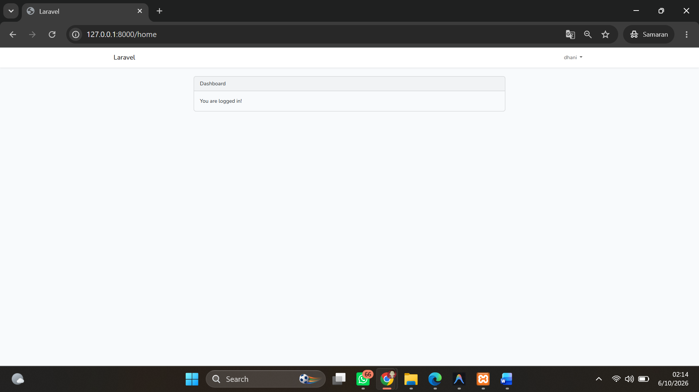
(Halaman Home Setelah Berhasil Login Bawaan)
Tahap 4: Custom Table Users dan Seeding Data Admin
Struktur tabel users default perlu ditambahkan beberapa kolom baru seperti username, level, dan status untuk menyesuaikan dengan kebutuhan data Sistem Informasi Sekolah. Membuat file migrasi tambahan untuk memodifikasi tabel users yang sudah ada dengan perintah:
php artisan make:migration costum_table_users
Buka file migrasi costum_table_users.php yang terbentuk, lalu tambahkan kode program pada method up() untuk mendefinisikan kolom baru, serta method down() untuk fungsi dropColumn:
public function up()
{
Schema::table('users', function (Blueprint $table) {
$table->string("username")->unique();
$table->string("level");
$table->enum("status", ["ACTIVE", "INACTIVE"]);
});
}
Jalankan perintah php artisan migrate kembali di terminal agar modifikasi kolom tersebut diterapkan, kemudian cek struktur tabelnya.
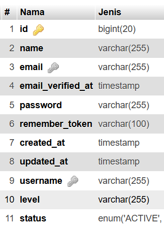
(Struktur Kolom Tabel Users Sesudah Ditambah)
Membuat data user admin awal secara otomatis menggunakan fitur seeding dengan perintah:
php artisan make:seeder AdminSeeder
Buka file AdminSeeder.php di folder database/seeders/ dan definisikan data akun admin default dengan enkripsi password menggunakan \Hash::make('12345678'). Jalankan proses seeding ke database menggunakan perintah:
php artisan db:seed --class AdminSeeder
Tahap 5: Templating Layout Menggunakan SB Admin 2
Langkah selanjutnya adalah merombak tampilan dashboard default menggunakan template eksternal Bootstrap bernama SB Admin 2. Ekstrak file template SB Admin 2 dan salin seluruh folder asset-nya ke dalam direktori public/sbadmin pada project Laravel.
Membuat file master layout global bernama main.blade.php di dalam folder resources/views/layouts/. Struktur master layout ini memanggil bagian sidebar dan topbar secara terpisah menggunakan perintah @include serta mendefinisikan tag @yield. Memotong bagian kode login bawaan untuk disesuaikan dengan asset template SB Admin.
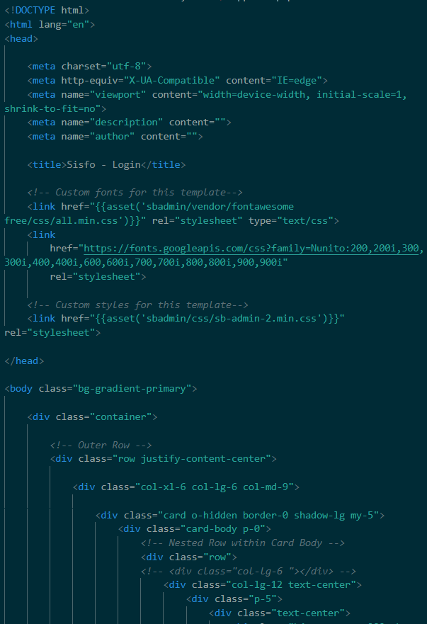
(Kodingan View Login Head)
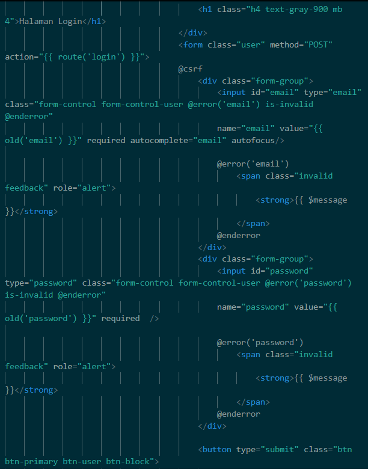
(Kodingan View Login Form)
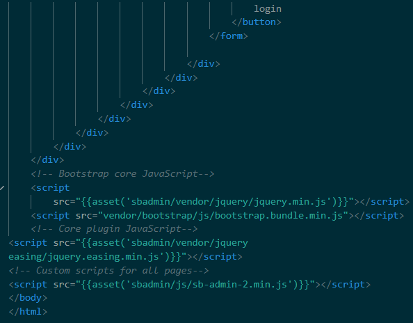
(Kodingan View Login Scripts)
Jalankan URL login untuk melihat perubahan interface layouting baru.
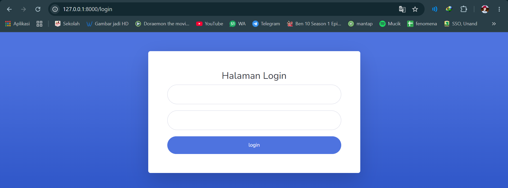
(Tampilan Baru Interface Halaman Login Biru)
Mengatur dan membagi susunan file master layout global utama aplikasi.
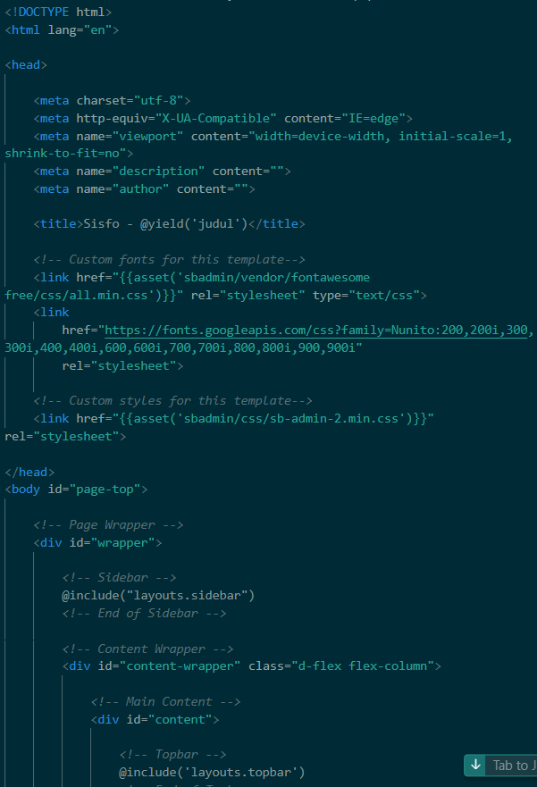
(Kodingan main.blade.php Bagian Atas)
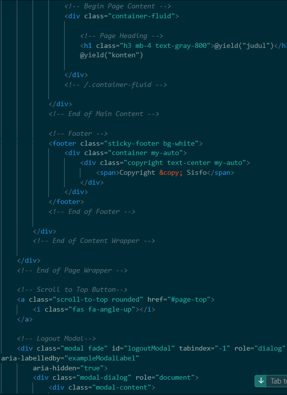
(Kodingan main.blade.php Bagian Bawah)
Menyesuaikan file halaman resources/views/home.blade.php milik user agar mewarisi layout master yang baru dibuat:
@extends('layouts.main')
@section("judul") Dashboard @endsection
@section('konten')
<p>dashboard</p>
@endsection
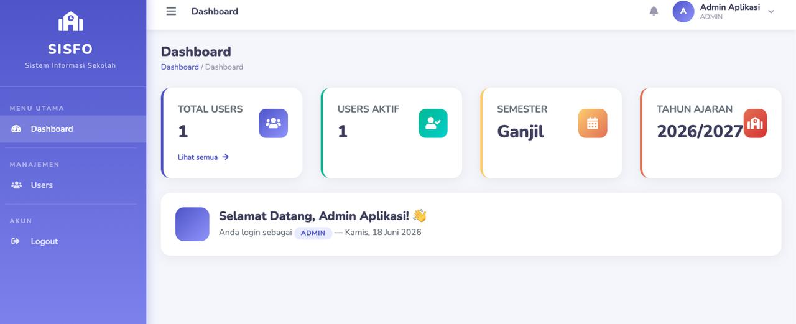
(Visual Halaman Dashboard Baru SB Admin 2)
Tahap 6: Fitur Manajemen Users (CRUD)
Sistem manajemen user dibangun secara penuh menggunakan Resource Controller untuk menangani proses Create, Read, Update, dan Delete data.
1. Membuat resource controller baru untuk entitas user melalui perintah terminal:
php artisan make:controller UserController -resource
2. Mendaftarkan route resource UserController pada file routing utama routes/web.php:
use App\Http\Controllers\UserController;
Route::resource('users', UserController::class);
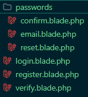
(Potongan Kodingan File routes/web.php)
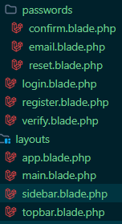
(Hasil Daftar Endpoint Pemetaan php artisan route:list)
3. Mengonfigurasi logika penuh di dalam file controller utama untuk mengontrol jalannya data CRUD.
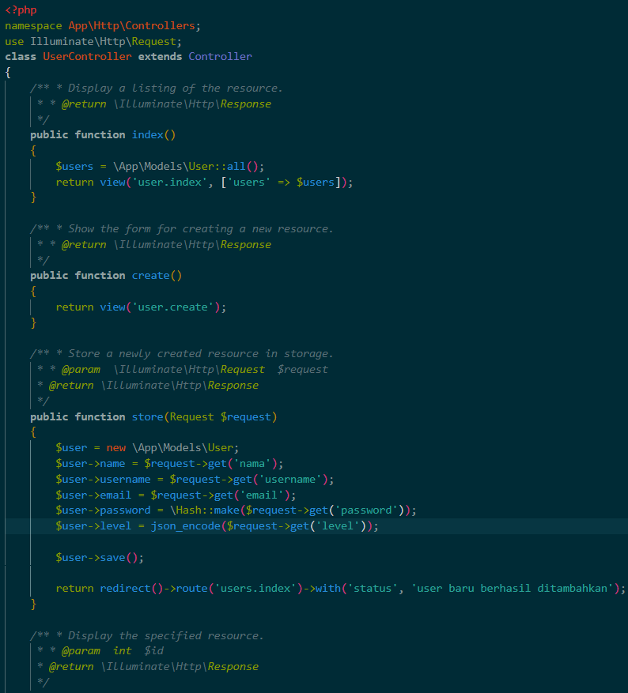
(Source Code UserController.php Method index, create, store)
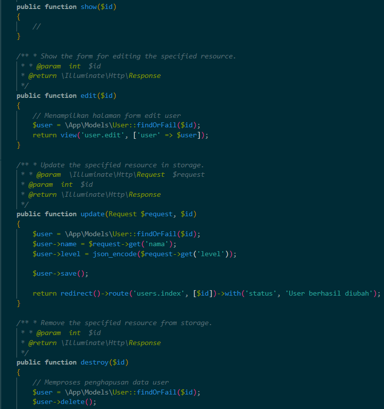
(Source Code UserController.php Method edit, update, destroy)
4. CREATE (Tambah User): Mengatur method create() pada UserController untuk mengembalikan view form tambah data (user.create). Form input pada create.blade.php dibuat menggunakan framework Bootstrap dan dilengkapi dengan Select2 multiple-select untuk memilih level user.
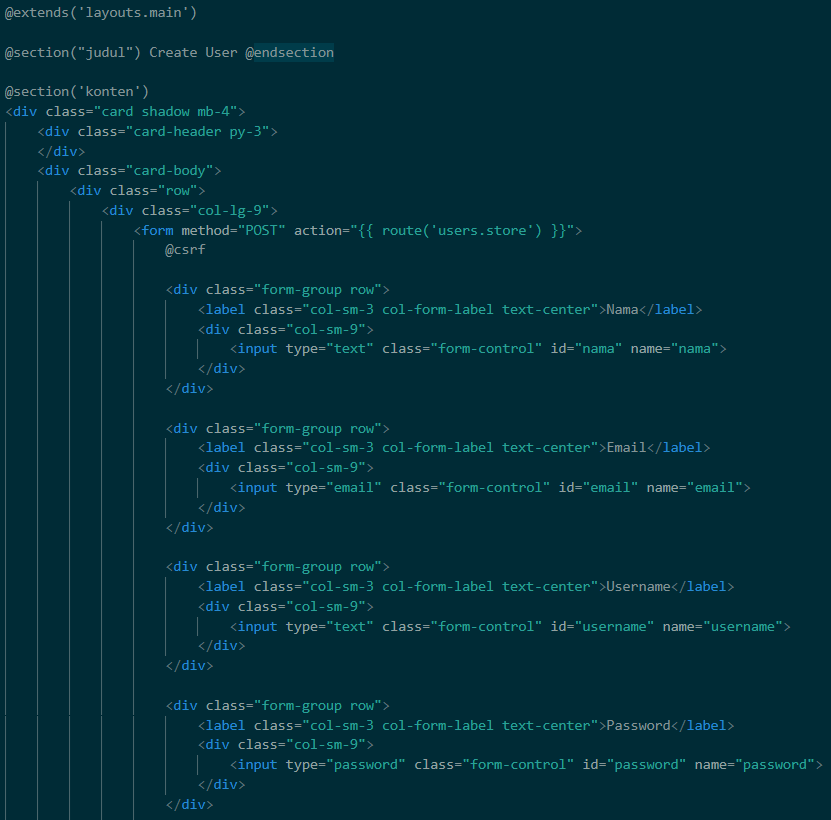
(Source Code File user/create.blade.php Bagian Atas)
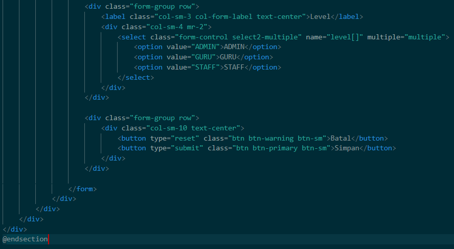
(Source Code File user/create.blade.php Bagian Bawah)
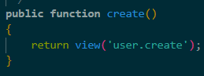
(Potongan Kode Method create() di Controller)
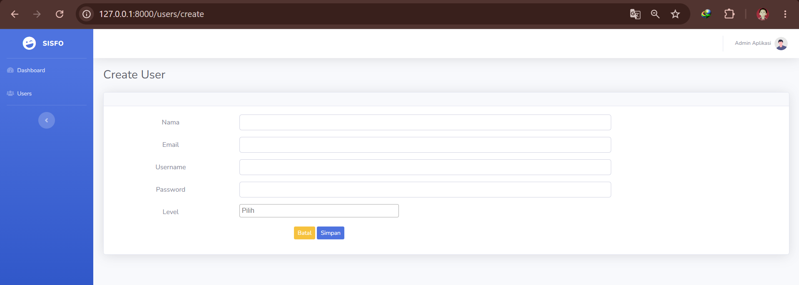
(Visual Halaman Browser /users/create Form Kosong)
5. READ (Tampilkan List): Mengatur method index() pada controller untuk mengambil keseluruhan data dari database via model User::all() lalu mengirimkannya ke view user/index.blade.php. Tampilan tabel diintegrasikan dengan library DataTables.
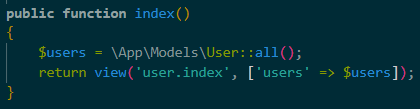
(Potongan Kode Method index() di Controller)
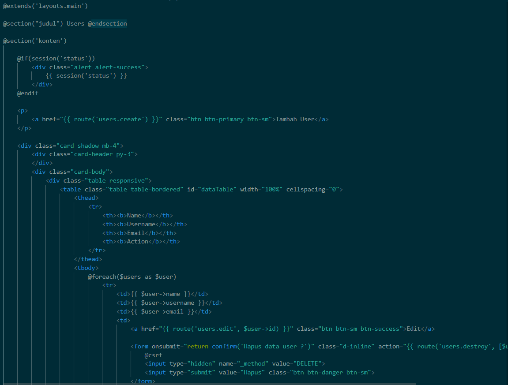
(Potongan Kode Tombol Tambah User Berupa Tag Anchor)
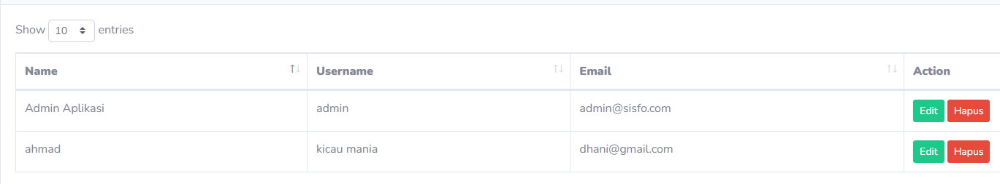
(Tampilan Tabel List Data User Awal di Browser)
6. UPDATE (Edit User): Tombol edit pada baris tabel mengarahkan endpoint ke route users.edit dengan menyertakan ID user. Method edit() menangkap ID tersebut, mencari entitas dengan User::findOrFail($id), dan menampilkannya kembali pada form edit. Pengiriman data pembaruan menggunakan form method spoofing PUT untuk diproses oleh method update() di controller.

(Source Code user/index.blade.php loop @foreach)
(Source Code user/index.blade.php pemanggilan DataTables)

(Source Code File user/edit.blade.php Bagian Atas)
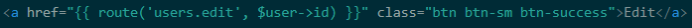
(Source Code File user/edit.blade.php Bagian Tengah)

(Source Code File user/edit.blade.php Bagian Bawah)
(Potongan Kode Method update() di Controller)
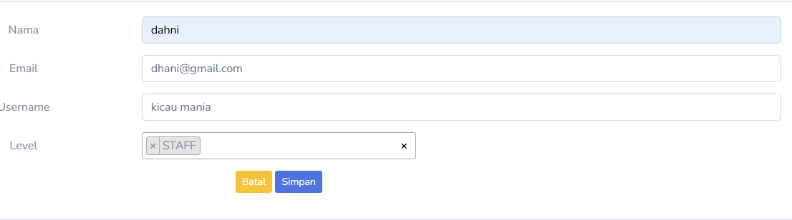
(Visual Proses Mengubah/Mengedit Data Kolom User di Browser)
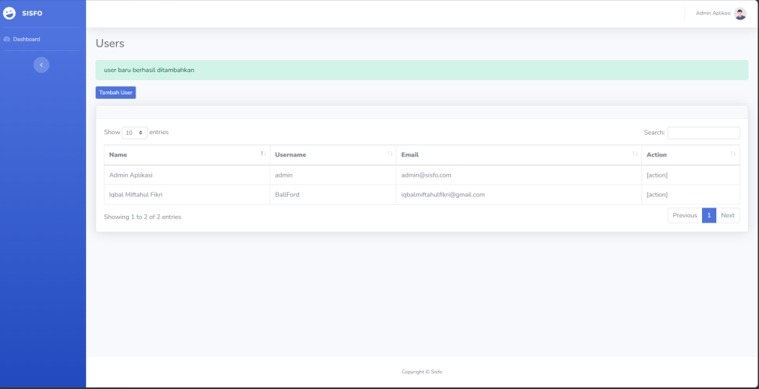
(Visual Munculnya Alert Success Warna Hijau)
7. DELETE (Hapus User): Tombol hapus dibungkus di dalam elemen form bermethod POST dengan perintah spoofing method DELETE. Tombol dilengkapi JavaScript onsubmit="return confirm(...)" untuk memicu pop-up dialog konfirmasi. Ketika disetujui, data akan dihapus oleh action destroy() di controller menggunakan fungsi $user->delete().
(Potongan Kode Fungsi Hapus di File Index)
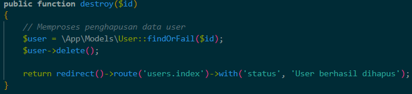
(Potongan Kode Method destroy() di Controller)
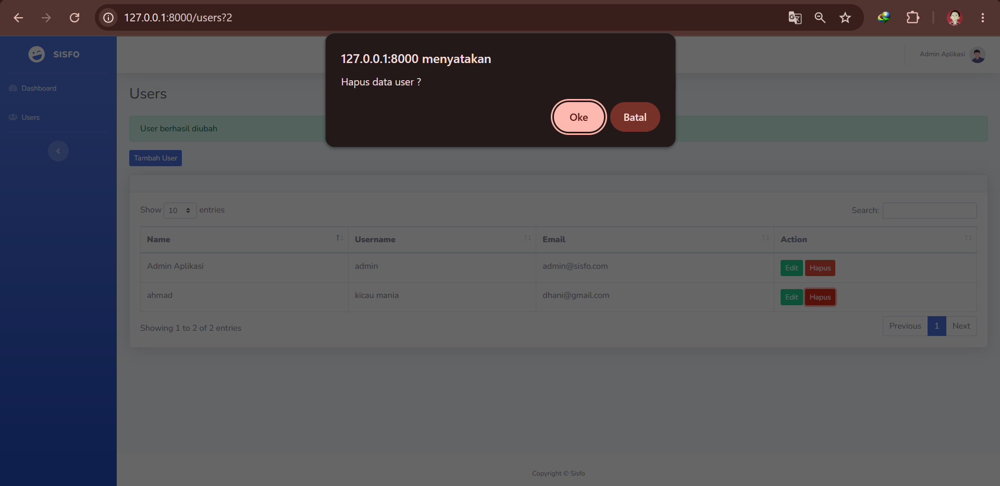
(Visual Tampilan Pop-up Dialog Konfirmasi Hapus Data User)
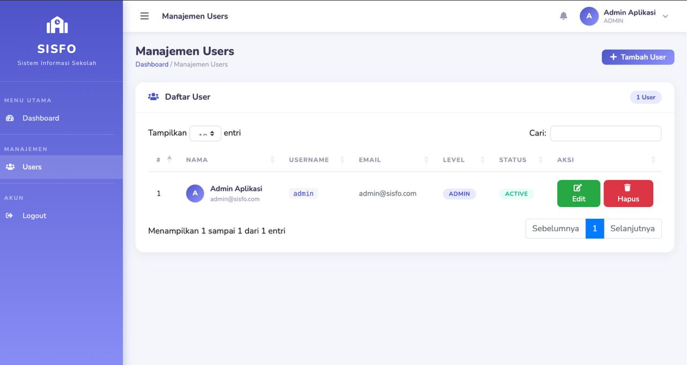
(Visual Tampilan Tabel List Akhir Setelah Baris Terhapus)
8. MENAMBAHKAN MENU USERS: Langkah terakhir adalah mendaftarkan modul menu users ke komponen sidebar agar mempermudah navigasi perpindahan halaman aplikasi.
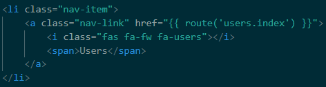
(Potongan Kode Menu Users pada File sidebar.blade.php)
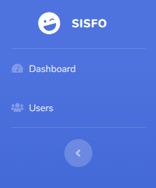
(Tampilan Visual Menu Navigasi Baru "Users")
Kesimpulan
Berdasarkan hasil pelaksanaan praktikum pemrograman web menggunakan Laravel 9 dengan studi kasus Sistem Informasi Sekolah, dapat ditarik beberapa kesimpulan sebagai berikut:
- Fitur User Authentication bawaan framework Laravel terbukti sangat memotong waktu development karena seluruh struktur controller, routing, dan komponen view dasar login/register dapat dibuat secara otomatis dan instan.
- Fleksibilitas sistem migration pada Laravel mempermudah pengembang dalam melakukan modifikasi atau kustomisasi struktur tabel database tanpa perlu berinteraksi langsung secara manual di DBMS.
- Penerapan sistem Blade Templating (master layouting) menggunakan perintah
@extends,@include, dan@yieldmenghasilkan pengelolaan interface web yang modular, rapi, dan dinamis saat diintegrasikan dengan template eksternal pihak ketiga. - Penggunaan Resource Controller dan Resource Routing pada Laravel menyederhanakan pengelolaan endpoint untuk fungsionalitas CRUD secara penuh, sehingga kode program aplikasi menjadi lebih rapi, konsisten, dan memenuhi standar arsitektur web modern.